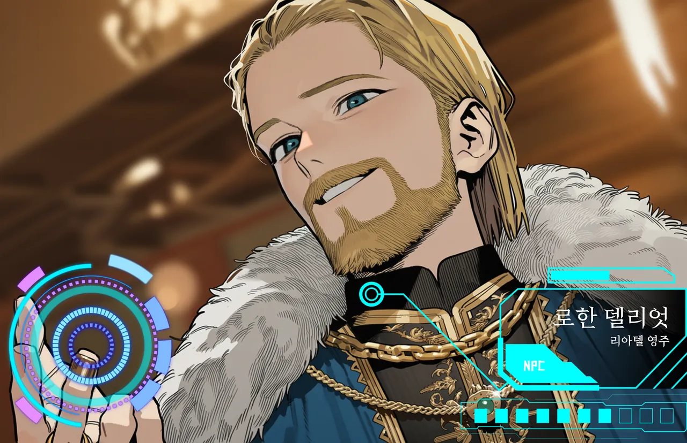

표정←→
원주민리아텔 · 계승 다툼의 한 축
로한 델리엇
약속한 보상은 언제나, 받고 보면 조금 적다.
- LV
- 22
- ROLE
- 리아텔 영주
- AGE
- 남 · 38
리아텔에서 처음 받게 될 의뢰들의 주인. 왕권 약한 리아텔에서 이웃 영주와 영지 다툼 중이고, 계승 문제가 터지면 내전의 한 축이 된다.
귀환석 광장도 그의 소관이라, 새 이방인이 늘수록 세수도 는다. 이방인은 편리한 소모품. 일이 틀어지면 아랫사람에게 떠넘기고. 그러다 이방인 명성이 오르면? 눈에 띄게 공손해진다.
“오해가 있었던 것 같군요.”
- 외형
- 어깨 길이 금발 넘김머리, 턱수염, 금자수 청록 귀족 코트, 흰 모피 망토
- 말투
- 귀족체 존댓말. 상대를 "이방인 공"이라 부르고, 불리하면 돌려 말한다.